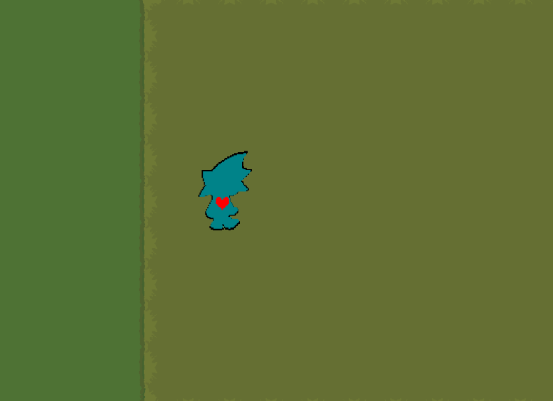

About the Game
"Afond" is a turn based rpg where you play as the human Ryne.
Ryne was walking home one day when he took a wrong turn. he slowly walks in the forest lost and on nerve, When BAM you hit a door and get sucked into it making you trapped in the OtherWorld (Monster Realm).
Fight your way through strange encounters, uncover the truth behind the OtherWorld, and try to find a way home...
Media
Check out development progress, gameplay, and sneak peeks on TikTok:
TikTok: @lusans2001

Community
Join the Afond community to discuss the game, report bugs, and share feedback:
Join the Discord